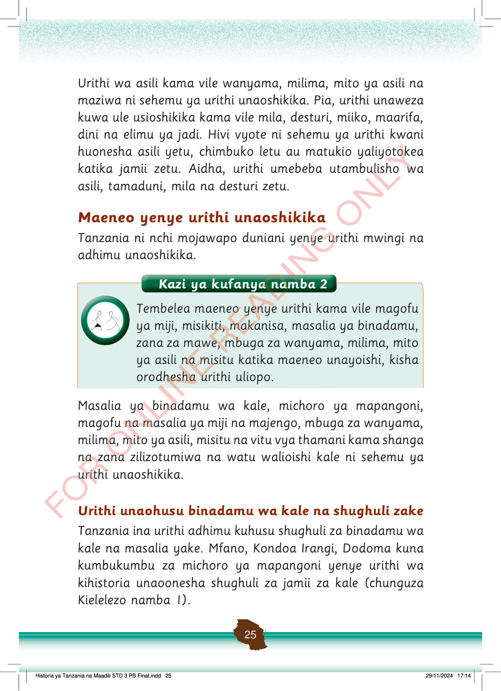

Urithi wa asili kama vile wanyama, milima, mito ya asili na maziwa ni sehemu ya urithi unaoshikika.
Pia, urithi unaweza kuwa ule usioshikika kama vile mila, desturi, miiko, maarifa, dini na elimu ya jadi.
Hivi vyote ni sehemu ya urithi kwani huonesha asili yetu, chimbuko letu au matukio yaliyotokea katika jamii zetu.
Aidha, urithi umebeba utambulisho wa asili, tamaduni, mila na desturi zetu.
Maeneo yenye urithi unaoshikika
Tanzania ni nchi mojawapo duniani yenye urithi mwingi na adhimu unaoshikika.
Masalia ya binadamu wa kale, michoro ya mapangoni, magofu na masalia ya miji na majengo, mbuga za wanyama, milima, mito ya asili, misitu na vitu vya thamani kama shanga na zana zilizotumiwa na watu walioishi kale ni sehemu ya urithi unaoshikika.
Urithi unaohusu binadamu wa kale na shughuli zake
Tanzania ina urithi adhimu kuhusu shughuli za binadamu wa kale na masalia yake.
Mfano, Kondoa Irangi, Dodoma kuna kumbukumbu za michoro ya mapangoni yenye urithi wa kihistoria unaoonesha shughuli za jamii za kale (chunguza Kielelezo namba 1).
Historia ya Tanzania na Maadili STD 3 PB Final.indd 25
29/11/2024 17:14